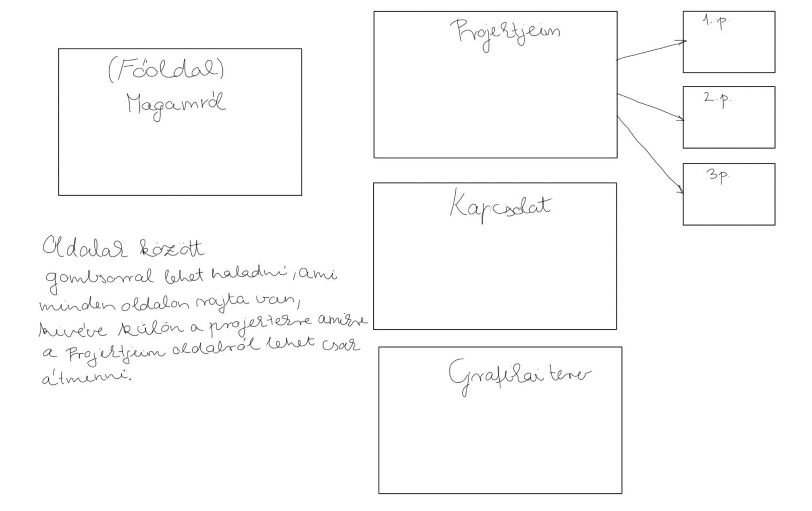
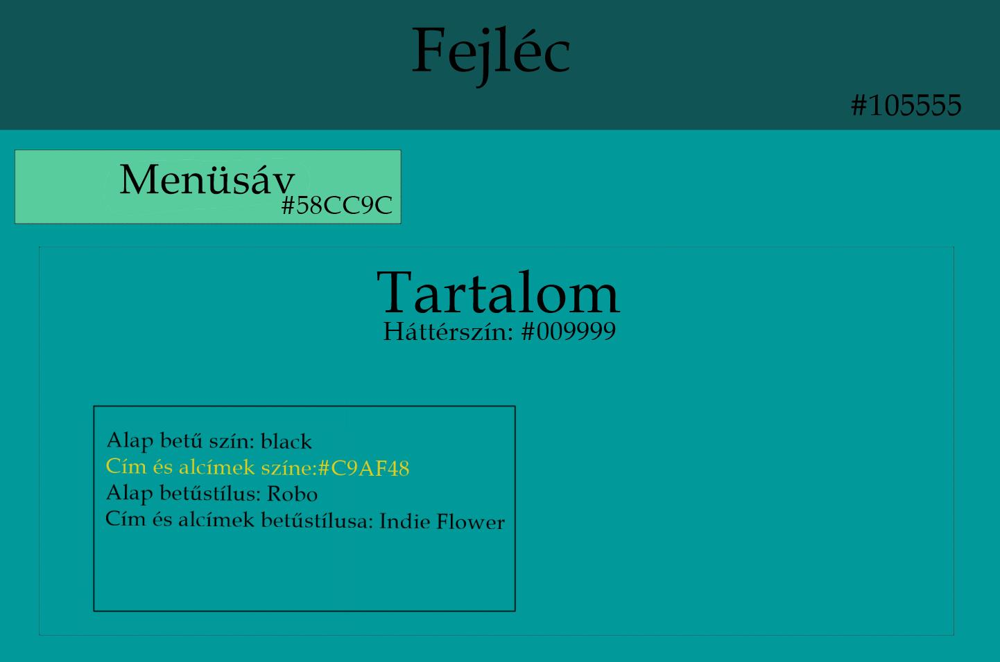

Nem vagyok tapasztalt a programozás terén, így a portfólió oldal elkészítésésnél a gyakorlati anyagból indultam ki.
A tervezést azzal kezdtem, hogy kitaláltam milyen oldalak legyenek, és ezek egymáshoz hogyan kötődjenek, ennél a résznél sok ötletet merítettem Várkonyi Botond példa ként megadott portfóliójának a felépítéséből.
Következő része volt a garfikai megtervezés. A színek választásához http://users.atw.hu/vitt1c3ps/htmlszinkod.php oldalt használtam, a betűstílushoz pedig a google fonts-ot használtam.
Az oladal elkészítésénél kihívást okozott a tartalmak elhelyezése, így itt a gyakorlat vezetőhöz fordultam és a segítségével display-flex-el oldottam meg a problémát. Ez a probléma a főoldalon merült fel, majd később alkalmaztam az 5. oldalon is már a jó megoldást. Szintén segítséget kértem ahhoz,hogy mint kiderült, az egyik inline elem egy másik elem fölé lógott, megoldásához.